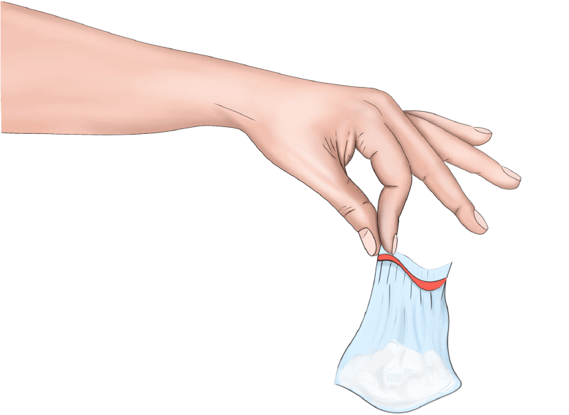
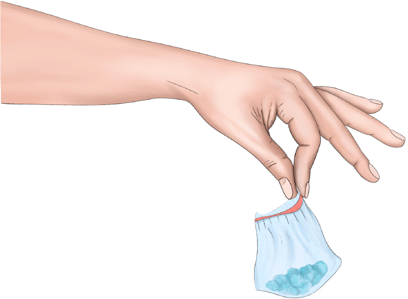
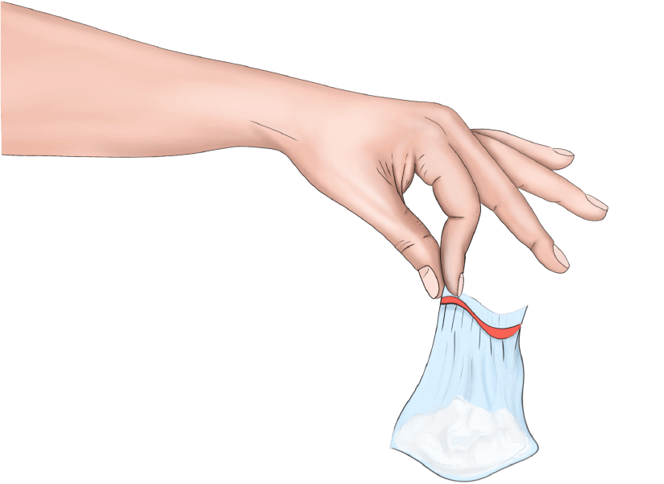
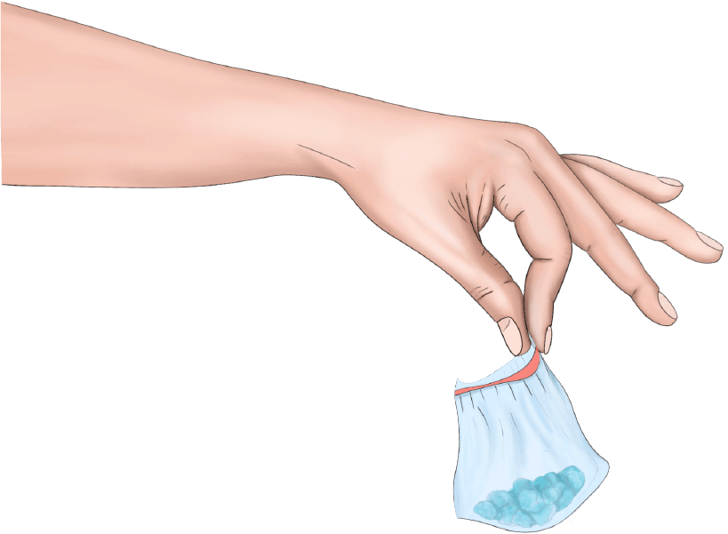
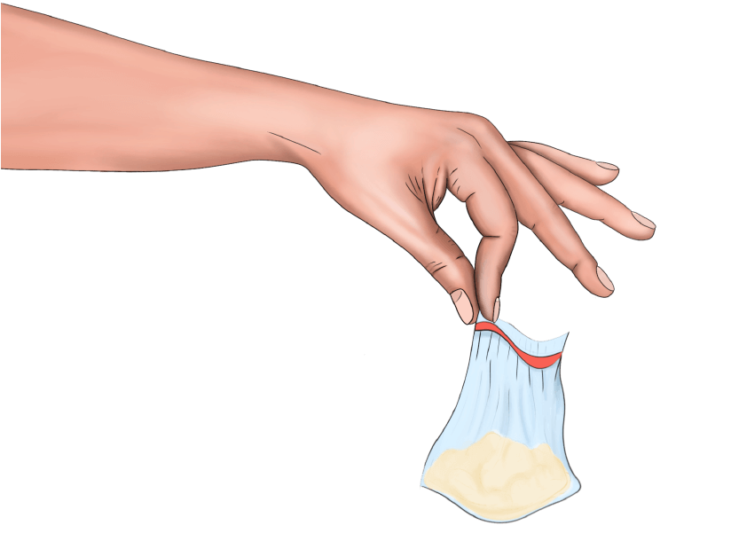
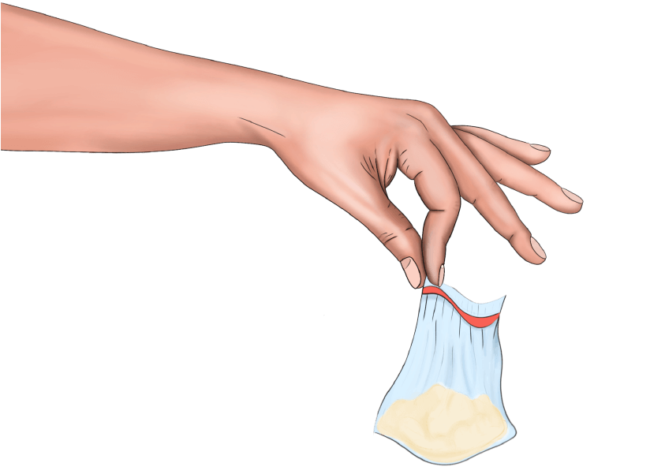

What happens when you mix...
 



 



Mixing Alcohol and Cocaine
What Happens When You Mix Alcohol and Cocaine?
“If I have a near-beer, I’m near beer. And if I’m near beer, I’m close to tequila. And if I’m close to tequila, I’m adjacent to cocaine.”
-Craig Ferguson
Symptoms of Concurrent Alcohol and Cocaine Use
Combining these drugs is likely to produce dangerous symptoms that can even lead to death. They include:
- An increase in violent tendencies
- Risky sexual behavior
- An increase in anxiety
- An increase in irritability
- An increase in body temperature
- A higher heart rate than normal
- Painful headaches
- Chest pains.
- Heart palpitations
- Nausea and vomiting
- Extreme confusion
Main Effects & Risks of Combined Alcohol and Cocaine Abuse
Cocaethylene is extremely toxic in the liver. It has also been blamed for heart attacks – or myocardial infarctions - even in people under 40 years of age. There is also the risk of serious brain damage from cerebral infarction. This occurs when blood vessels and brain tissues die.
People who avoid having heart attacks may develop cardiac arrhythmias, which are known to cause heart attacks later on. They may eventually be diagnosed with heart disease.
Cocaethylene has the ability to produce seizures, and people have been known to have strokes or fall into comas. It can even result in sudden death. There is no safe way to use cocaine and alcohol at the same time.
The mental effects of this drug combination should not be ignored either. Many people will become paranoid, even when they are not using at the time. Confused states can lead to poor decisions that may be life threatening. The Dangers of Combining Cocaine and Alcohol
Cocaine and alcohol can be a deadly combination, and yet, it is one that many people indulge in. Take it from Drew Barrymore, who began using coke at the age of 12, only to end up in rehab the following year.
Drew is certainly not the only celebrity who has combined cocaine, alcohol and other drugs. Fortunately, she left that life a long time ago and went on to create a stellar career. Not everyone makes the right decision, and there is something about this combination that draws people in.
For those who mix alcohol and cocaine, it is important to get the facts. Many fail to realize how potent this combination can be.
Facts You Should Know: Alcohol and Cocaine
When people take cocaine and alcohol at the same time, this is known as poly-drug mixing. Mixing these two substances is one of the most popular drug combinations. In fact, most fatal overdoses involve the use of more than one drug.
Using these two drugs together will produce a third substance called cocaethylene. This is the only known example of the body creating a third drug, and it produces an intense sensation of euphoria. The liver works hard to eliminate it, but because there is alcohol in the system, it slows down the process.
Cocaine has a very short half-life on its own. But this changes when it is combined with alcohol. Cocaethylene is able to remain in the body up to five times longer. It has a median half-life of close to 2.5 hours.
In this video, Dr. Anath Acharya from Highland Hospital discusses the effects of cocaine and alcohol:
Alcohol and Cocaine: The Statistics
It is alarming that using these drugs together has become so widely popular. Statistics tell us that:
- There has been a 25% increase in the number of people using cocaine between the ages of 16 and 24.
- The number of people seeking treatment for cocaine addiction has doubled in the last four years.
- Likewise, the number of people seeking emergency treatment after overdosing on cocaine has doubled over the last five years.
- Alcohol is believed to be a significant factor in many of these treatment admissions.
- There is suspicion that mixing these two substances explains why so many people in their 30s are suffering from heart problems.
NIDA reports that:
- There were about 1.5 million current cocaine users in the U.S. in 2014.
- These individuals make up 0.6% of the population.
- Many of these people are between the ages of 18 and 25.
- In fact, 1.4% of young people report having used the drug in the last month.
- In 2014, 913,000 people in the United States met the DSM-V criteria for dependence or abuse of cocaine.
Treatment Options for Co-Occurring Alcohol and Cocaine Addiction
Many people who use cocaine and alcohol together suffer from co-occurring disorders. These are mental health conditions that often occur along with addiction or substance abuse.
It is very important to treat the addiction. But if the underlying cause is left untreated, there may be little to no long-term improvement. There are several different treatment options that should be considered.
Medical Detox
A medical detox is vital for someone who is addicted to both alcohol and cocaine. Once these drugs are stopped, the individual will experience withdrawal symptoms for both substances. The combination of symptoms can make it nearly impossible to recover without professional help.
Patients may be placed on medications to help with their symptoms. This should make recovering much more comfortable, but it will also help to avoid potential complications.
Residential or Inpatient Rehab
After the detoxification process has been completed, additional treatment is needed in the form of rehabilitation. An inpatient rehab is often the best solution, but those with a history of relapsing may need a residential treatment program.
Therapy will provide the necessary support – both from a therapist and from peers – to help the individual recover. A proven approach from a facility with a high success rate should be considered.
Intensive Outpatient Treatment (IOP)
For those who are unable to commit to an inpatient program, IOP offers an excellent alterative. It allows patients to remain living at home while they receive treatment. This form of care has shown to be just as effective as inpatient rehab for many patients.
RETURN
Mixing Alcohol and Heroin
What Happens When You Mix Alcohol and Heroin?
Symptoms of Using Heroin and Alcohol Together
For someone who is using alcohol and heroin at the same time, the side effects will be evident. Some of the more common symptoms of this combination include:
- Feeling dizzy
- Becoming very drowsy
- Lacking in motivation
- Extreme itchiness of the arms, or elsewhere on the body.
- Problems with concentration
Of course, there is also an intense sensation of euphoria that heightens the effects of both drugs. This may be what causes users to return to this combination time and time again.
What are the Main Effects of Combined Alcohol and Heroin Abuse?
Using these drugs together – even one time – is extremely dangerous. Abusing heroin is likely to cause people to not feel the effects of the alcohol they drink. As a result, they may drink more to compensate for that. This can easily cause people to fall victim to alcohol poisoning
People may also notice that their bodies feel numb, and they are not able to walk properly. These issues with coordination can make it hard to operate a vehicle or even walk down the street.
Lightheadedness is a known side effect of combining alcohol and heroin. This can lead to a loss of consciousness, and some people may fall into a coma or become unresponsive. At that point, it is very likely that they may stop breathing completely.
Combining alcohol and heroin is a potentially deadly mixture. Cory Monteith was a star on the hit television series, Glee, when he lost his life to these drugs. His death was accidental, but there is no denying that polydrug abuse was the cause.
This video offers information about Cory’s untimely death:
Heroin is a dangerous drug on its own, but drinking alcohol at the same time amplifies the effects. Both are classified as depressants, which can have serious effects on the heart and the brain. The heart rate can dip dangerously low, while the brain is starved of oxygen in the process.
Far too many prescription opioid abusers are turning to heroin to get high. NIDA reports that 80% of heroin users admit that their first opioid was a prescription painkiller. Many of them will use the drug alongside alcohol as a way to enhance their euphoric experiences.
Important Facts About Alcohol and Heroin
The body has a very difficult time taking on a double-depressant like the alcohol/heroin combination. The heart is taxed, which causes pulse rate to dip to dangerously low levels. In some people, it may even stop. Some people will also stop breathing altogether.
Taking alcohol and heroin together results in blood with less oxygen getting pumped to the brain. As a result, the brain cells can become depleted. Some brain cells can die within just a few minutes.
Alcohol and Heroin: The Statistics
Heroin use has undoubtedly increased over the last ten years, and the statistics are there to prove it.
- In 2000, 0.33% of the population reported having used heroin at one time.
- By 2010, that had increased to 1.6%.
- This works out to about 3.8 million people in the United States.
- The increase is primarily among the Caucasian population, which shows a rise from 0.34% to 1.9%.
- 91 Americans lose their lives every day because of opioid overdoses.
- In many of these deaths, heroin is a factor.
In 2016, SAMHSA found that there were 948,000 people who used heroin in the United States. 7.3 million people between the ages of 12 and 20 reported having used alcohol within the last month. There should be no doubt that some of these individuals had used both at the same time.
Treatment Options for Co-Occurring Heroin and Alcohol Addiction
It is not uncommon for patients to suffer from two types of addictions. Many heroin addicts are also addicted to alcohol. When this is the case, it is vital to treat both conditions at the same time.
Successfully treating these substance abuse problems requires detoxification as well as rehab. This approach will offer help for the physical and psychological aspects of the addiction.
Medicated Detox
A medical detox is a vital part of recovery for people using both alcohol and heroin. It is crucial that they remain in an inpatient setting while receiving treatment for withdrawal symptoms.
These individuals will experience both alcohol withdrawal and heroin withdrawal at the same time. The combination can be fatal if complications occur. They need to be in a medical setting where they can get help right away if there is a problem. Also, they may need to take medications to help them with their symptoms.
The Use of Methadone, Suboxone and Other Opioid Replacement Therapy Medications
Opioid replacement therapy has shown to be very effective in treating heroin addiction. Drugs like methadone and suboxone have shown great promise as opioid replacement therapy medications.
Vivitrol is one of the newer drugs on the market being used for medication assisted treatment. It has been approved for both the treatment of alcoholism and opioid addiction. It can be very effective when someone presents with both types of substance use disorders.
Inpatient or Residential Treatment
An inpatient treatment program program that is experienced in treating alcoholism and heroin addiction is highly recommended. But this should only be sought after the detoxification process has been completed.
Some people may need to consider long-term rehab at a residential facility. This is an appropriate placement if they have a history of relapsing, or a more severe dependence on alcohol and heroin.
Intensive Outpatient Treatment (IOP)
Finally, attending an IOP is another good option for treatment. This is a program that generally lasts around 12 weeks, and patients have appointments three to five times per week. It provides them with a lot of support, and the success rates are comparable to inpatient programs.
RETURN
What Happens When You Mix Alcohol and Marijuana?
Symptoms of Concurrent Marijuana and Alcohol Use
Using these drugs at the same time is likely to result in an array of symptoms. Alcohol is a depressant drug, whereas marijuana can produce sedative and stimulant effects. The result is side effects such as:
- Shaking or tremors
- Symptoms of anxiety
- Problems focusing
- The onset of hallucinations or paranoia
- Nausea
- Headaches
- Decreased coordination
- Increased appetite
- Problems with breathing
- Sleepiness and fatigue
- Memory problems
- Bloodshot eyes
It is very common for people to experience a condition referred to as greening out when taking alcohol with marijuana. This means that they feel sick after they smoke pot. They may sweat excessively and begin vomiting.
The Main Effects of Abusing Alcohol and Marijuana
The major concerns with abusing both of these drugs at the same time are both mental and physical. The individual’s heart rate may increase dramatically. When they experience withdrawal symptoms, they may be highly exaggerated.
Anxiety and panic attacks are typical among those who use marijuana and alcohol together. People frequently have a hard time remembering things, and research has shown a delay in brain development when young people use them together. It is even possible for this combination to lead to symptoms of long-term psychosis.
The Dangers of Combining Marijuana and Alcohol
The combination of marijuana and alcohol is one that many people think of as being relatively harmless. It is actually not safe at all, and few take the time to understand the risks.
Hollywood glamorizes the use of these drugs, and the fact that marijuana has been legalized all over the country does nothing to stifle that. Of course, not everyone in Tinsel Town thinks that using them together is OK.
Angelina Jolie filed for a divorce in 2016. She claimed that her husband, well-known actor, Brad Pitt, has continued to use pot and drink alcohol. She was concerned that it may have been contributing to an anger problem, potentially putting their children in danger.
This video offers more information:
The reality is that poly-drug mixing is dangerous, and alcohol and marijuana are one of the most popular combinations. Using them together will enhance their effects, putting people in danger of both physical and mental illness.
Alcohol and Marijuana: Facts You Should Know
Most of the marijuana that is available today is much different than what people used, even twenty years ago. Researchers state that its potency is as much as three times stronger. In many tests, the marijuana was found to be around 20% THC. This is vastly different from what it was in the 80s. At that time, the average THC level was around 4%.
Higher THC levels could mean more chances of adverse or unpredictable reactions, according to NIDA. This drug is already psychologically addictive. It is possible that a physical addiction could occur if the THC content continues to increase at this rate.
Alcohol and marijuana both metabolize at different rates. When they are taken together, it can take a much longer time for them to be removed from the body. Alcohol is processed at a rate of about one drink per hour. Depending on how much is consumed, it can take several hours for it to leave the system.
Marijuana is metabolized quicker, and some THC metabolites have a half-life of 20 hours. But when alcohol is combined with it, it may take much longer for the body to process it.
Alcohol and Marijuana: The Statistics
Several states have now legalized marijuana for recreational use. When you also consider the fact that studies have shown it to be safer than alcohol, it is not surprising that more people are using it.
NIDA reports that:
- Marijuana is the most commonly used drug in the U.S., with young people being the primary consumers.
- Interestingly, its use among middle and high school students has decreased after several years of increasing.
- In 2015, there were more than 11 million young adults between the ages of 18 and 25 who had used it during the past year.
- The number of people who believe the drug is risky is decreasing substantially.
- Currently, more than 22.2 million people have used it in the last year.
The NIAAA reports that more than 86% of people ages 18 or older have consumed alcohol at some point. 56% state that they drank during the past month.
Treatment Options for Co-Occurring Marijuana and Alcohol Addiction
Anyone using marijuana and alcohol regularly should receive the proper type of treatment. This generally means a combination of both detox and rehab to help in the physical and psychological components of the addiction.
The Importance of a Medicated Detox
While detox is not usually needed for people who are addicted to marijuana, recovering from alcoholism does require it. In many cases, the symptoms of withdrawal will be more severe for someone using both drugs.
For this reason, a medical detox is recommended for most people. This means taking medications to help with withdrawal symptoms and being monitored in a medical setting.
Inpatient Treatment or Residential Rehab
It is very important to follow up with a high-quality rehabilitation program after detoxing. Most experts agree that an inpatient rehab is usually the best option. But some people may require more intensive treatment in a residential setting. There, they can receive long-term care.
Intensive Outpatient Programs (IOP)
For those who cannot commit to an inpatient program, IOP is a great alternative. This type of rehab allows patients to continue to live at home and attend their appointments on an outpatient basis. They will be expected to attend between three and five appointments per week, and each one will be several hours long. Compliance is also expected, but IOPs often work just as well as inpatient rehabilitation centers.
RETURN
What Happens When You Mix Alcohol With Meth?
Symptoms of Concurrent Alcohol and Meth Use
When alcohol is consumed responsibly, in moderation, it can be a safe and enjoyable part of life. But once it is combined with meth, it can quickly become deadly.
The side effects and symptoms people experiencing when combining meth with alcohol include:
- Slower breathing rates than normal
- The onset of seizures
- Hypothermia, evidenced by pale or bluish tinted skin
- Excessive vomiting
- Becoming unconscious and unresponsive
- Falling into a coma
- Stupor
The Main Effects & Risks of Combined Alcohol and Meth Abuse
When people use meth and drink alcohol at the same time, the intoxicating effects of alcohol are muted. This can cause them to drink more than they normally would. It also results in an increased risk for alcohol poisoning.
Both of these substances have shown to cause serious problems in the brain. These issues can lead to poor decisions, and even brain damage if too much is consumed. When they are taken together, the effects are magnified, potentially causing even more damage.
There is a very high risk for severe complications when using alcohol and meth at the same time. In addition to seizures and breathing problems, people may develop psychosis. Heart attacks and strokes have also been reported.
The Dangers of Mixing Alcohol and Meth
Meth and alcohol can be a deadly combination. It can quickly lead to alcohol overdose, and result in severe mental and physical demise. There is a very high danger of mental illness, and people have died from heart attacks or strokes as a result.
Robert Downey Jr. is a prime example of someone who was headed down a dead end road because of this combination. During his stint on the television show, Ally McBeal, he was holed up in a hotel room with methamphetamine, additional drugs and a gun. Alcohol was also a major factor in his life. It wasn’t until he entered a year-long treatment facility that he got his life back. It was difficult, but he made it happen.
This is an interesting video in which Robert talks about his journey, including his experience with drugs and the aftermath:
Facts You Should Know: Alcohol and Meth
Polydrug use is very common in the United States. People frequently do it as a way to offset the effects of the first drug. Many researchers believe that people who mix alcohol and meth are doing it to counteract alcohol’s depressant effects. It also allows them to still feel the euphoria from drinking.
In 2011, there was a study done by researchers from Columbia University and the New York Psychiatric Institute. They found that:
- Taking both drugs together increased heart rate and blood pressure substantially.
- It also increased the euphoria experienced from both substances.
- The participants felt less drunk when taking the combination of the drugs.
- Meth did counteract some of the psychomotor and cognitive impairment of alcohol.
- The participants experienced fewer sleep disruptions.
- They developed a tolerance to the drug combination as time went on.
Alcohol poisoning is very real, and even more so when a drug like meth is combined with it. It is a condition that requires immediate medical attention; otherwise, it can be fatal.
Alcohol and Meth: The Statistics
Drug use statistics in the United States are shocking, as are those pertaining to alcohol abuse. Research tells us that:
- People who drink alcohol daily are five times more likely to smoke meth.
- 5% of meth smoking can be attributed to daily intoxication.
- In 2008, 24% of meth-related ER visits also involved alcohol intoxication.
- Between 2000 and 2008, meth consumption as increased substantially.
- After 2008, there was a decline, yet it continues to be a problem.
- Every year, there is around $13 billion spent on meth.
Treatment Options for Co-Occurring Alcohol and Meth Addiction
It is common for people to have more than one addiction. For those who are addicted to both meth and alcohol, it is important to receive treatment for both conditions. Otherwise, the other addiction will continue, and the first one may return. Fortunately, there are plenty of treatment options available.
Will You Need a Medicated Detox?
Patients with both a meth and alcohol addiction will require a medical detox. This is to address the physical side of the addiction.
Certain medications will be prescribed that will help with withdrawal symptoms. Vivitrol is one that is commonly being used to treat alcoholism. Someone taking meth as well might need additional drugs to help with their symptoms.
Detoxification is a very important step in the recovery process. In addition to helping with withdrawal, it can also reduce the risk of complications once drugs are stopped.
Residential/Inpatient Treatment
People will need to continue getting treatment through an inpatient treatment program after detoxing. This is essential because it will assist in treating the reasons behind the addiction.
Many people suffer from mental health conditions, which are known as co-occurring disorders. These conditions actually contribute to the likelihood of substance abuse, and need to be treated appropriately. If they are not, the individual will probably return to using quickly after finishing rehab.
For someone with a longer history of addiction and relapse, a more lengthy treatment program may be needed. Long-term rehab or residential treatment is available for anyone who needs it.
Intensive Outpatient Treatment (IOP)
Not everyone is able to go to an inpatient rehab. For those who cannot make that commitment, an IOP is a great alternative.
This program generally lasts for around 12 weeks. Participants come to appointments three to five times a week, depending on their recommendations. They spend time working with a therapist in a one-on-one setting, as well as working with peers in group therapy.
RETURN
What Happens When You Mix Marijuana and Cocaine?
Symptoms of Combining Marijuana and Cocaine
When people combine drugs – such as with mixing marijuana and cocaine – they usually do it for the counteractive effects. In this case, one substance is a depressant and the other one is a stimulant. Using them together can result in mixed signals being sent to the brain.
It is common for people who use cocaine and marijuana together to experience:
- An increase in heart rate
- A risk for a cocaine overdose
- An increase in blood pressure
- An increased tolerance to both drugs
- Symptoms of depression
- Symptoms of anxiety or panic attacks
- The onset of paranoia
- Restlessness
The combination of marijuana and cocaine is extremely dangerous, and it can lead to even more unpleasant side effects.
The Main Effects & Risks of Abusing Marijuana and Cocaine
Marijuana is often thought of as the perfect drug for mixing. People claim that it works to amplify the effects of other substances. It should be no surprise that people often choose to mix it with cocaine.
Both drugs carry serious health risks of their own. When they are combined, they can lessen the high from cocaine. Typically, this may lead people to use more of it than they should to increase the feelings of euphoria. The main concern with mixing these two drugs is the risk of a cocaine overdose.
There is also the risk of damage to the cardiovascular system, which can lead to a potential heart attack or stroke. This can happen to anyone who combines these drugs, regardless of their age or health history.
The Dangers of Mixing Cocaine and Marijuana
Over the years, the world has come to think of marijuana as a gateway drug – one that leads to the use of other drugs. This certainly seems to be the case. For many, it seems like the perfect partner for cocaine, or crack.
Cocaine has many undesirable effects, such as poor sleep and a depressed appetite. Including marijuana in the mixture can change these side effects. There are even people who will combine the two drugs in a joint and smoke them together. This is called a Diablito, or Little Devil.
Whether they are taken at the same time, or one right after another, the combined effects are dangerous, and can even be life threatening. Still this mixture is one that many celebrities even find appealing. Consider the fact that George Michael was arrested for possession of crack and marijuana in 2008. It is interesting that it occurred on the ten-year anniversary of a previous arrest.
This is a video from Entertainment Tonight that discusses his drug problem in more detail:
Facts You Should Know: Marijuana and Cocaine
Marijuana is the most commonly used drug in the United States. The number of people trying it for the first time each year has only increased over the years. Researchers believe that it is due – at least in part – to the fact that it has been legalized in many states.
Cocaine is a stimulant drug, and some experts believe that it is possible to become addicted after one use. The high is very powerful, and it is available in many different forms. Crack cocaine is among the most popular, and it gives a short-acting but intense high.
Both cocaine and marijuana have relatively short half-lives. Cocaine stays in the system for about 24 hours, whereas marijuana only stays in the blood for a few hours. But people who regularly use pot may find it takes longer for test negative on a drug test. When the two are combined, it can take longer for the body to process both drugs.
Cocaine and Marijuana Statistics
Marijuana statistics tell us that:
- More than 94 million people in America admit to using it at least once.
- In 2007, 2.1 million people admitted to using it for the first time that year.
- During that same year, 6.7% of 12 to 17-year-olds were using it currently.
- Marijuana production has increased dramatically over the last ten years.
- There were 242,000 ER visits in 2005 that were related to pot; a supposedly safe drug.
What is very interesting is that 62% of adults age 26 and older who had used marijuana before the age of 15 went on to using cocaine. In 2013, about 37,000,000 people admitted to using it at some point in their lifetimes.
Treatment Options for Co-Occurring Marijuana and Cocaine Addiction
It is important for those who suffer from marijuana and cocaine addictions to get the appropriate type of treatment. This involves treating both the physical and the psychological sides of the problem.
Medical Detox and Withdrawal Treatments
Marijuana is a drug that usually does not require any type of detoxification program. But cocaine is much different. Someone who has been using both will experience withdrawal from both drugs. This is why a medical detox is recommended.
A medicated detoxification program allows patients to take medications to help with their symptoms. It can also decrease the risk of any possible complications during withdrawal.
Inpatient Rehab and Residential Treatment
After detoxing, patients should continue on to an inpatient rehab to receive further treatment. Different types of therapy will be prescribed to address the underlying cause of the substance abuse problem.
Some individuals might benefit more from a long-term or residential treatment facility. This would allow them to get help for a longer period of time.
Intensive Outpatient Treatment Programs (IOP)
An IOP might be a good alternative for someone who is unable to commit to an inpatient stay. They offer an excellent level of care with a program that lasts for about 12 weeks. Patients are expected to be compliant and attend every appointment.
RETURN
What Happens When You Mix Marijuana and Heroin?
The Side Effects of Concurrent Marijuana and Heroin Use
Heroin and marijuana are two very different drugs with strong side effects on their own. When they are combined, the effects are amplified, which can lead to severe symptoms.
When people use these drugs together, they commonly experience:
- Excessive drowsiness
- Feeling lethargic
- Slower breathing rate
- Slower heart rate
- Feeling confused
- Loss of consciousness
It is also possible to experience nausea, vomiting and diarrhea when marijuana is laced with another drug. Someone who has never used heroin before could be at a high risk for overdosing with the combination.
The Main Effects of Combining Heroin and Marijuana
Many people who use this mixture of drugs do not realize that their marijuana has been laced with heroin. This is often done by dealers to enhance the high, and they do not always let the users know about it.
Others may choose to use this combination because they want a more intense euphoria. In either scenario, the individual could be at a high risk for overdosing on heroin.
The symptoms of a heroin overdose include:
- Shallow breathing, or possibly no breathing at all
- Dry mouth
- Very small pupils
- A discolored tongue
- Weak pulse
- A low blood pressure
- Bluish tinted nails and lips
- Constipation
- Stomach spasms
- Unresponsiveness
- Feeling disoriented
- Drowsiness
- Hallucinations or delusions
Someone who has overdosed on heroin may fall into a coma. It is very important to get medical help to the scene immediately if the individual displays any of the above signs.
The Dangers of Mixing Heroin and Marijuana
Heroin is an illicit opiate that has grown in popularity due to the opioid epidemic in the United States. Many people choose to use it after becoming addicted to prescription opioid pain pills.
Marijuana is a known gateway drug that has been shown to progressively lead to the use of other substances. Its popularity has grown over the years as more states have made recreational pot legal.
While marijuana on its own has not been blamed for any deaths, heroin has been all over the overdose headlines. Many celebrities have lost their lives to this drug, including Jimi Hendrix, Janis Joplin, River Phoenix, Eric Clapton and Jim Morrison.
Demi Lovato was recently rushed to the hospital because of a heroin overdose. This video provides more details:
Facts About Marijuana and Heroin
Marijuana laced with heroin can be a toxic combination; especially when the mixture is unknown by the user. With just one use, pot will not stay in the system for very long; although it can build up over time. Heroin has a longer half-life, and it can remain in the body for as long as seven days.
When the two are used together, it takes the body longer to process them. It may take about ten days before they both are out of the system.
Heroin use is at an all-time high in the United States right now. While there are medications like Naloxone that can treat an overdose, they are still happening at alarming rates.
Heroin and Marijuana Statistics in the U.S.
The number of people using heroin and marijuana in the United States is shocking. NIDA states that:
- In 2016, there were close to 950,000 Americans who had used heroin that year.
- That number has been increasing since 2007.
- The greatest increases are among people between the ages of 18 and 25.
- 170,000 people used the drug for the first time that year.
- That was nearly double the number from 2006.
- There were 626,000 people who met the criteria for heroin use disorder in 2016.
- That was an increase from 2002, when there were only 214,000.
The latest marijuana statistics are just as troubling.
- It is the most commonly used drug in the U.S.
- The most common users are young people.
- In 2015, there were more than 11 million young adults who had used it during the last year.
- Fortunately, its use among middle and high school students has dropped significantly.
- Every day, more and more young people are beginning to believe that using it regularly is not as risky as they once thought.
Treatment Options for Co-Occurring Marijuana and Heroin Addictions
It is very important to get the right treatment for both marijuana and heroin addiction. Many people with one addiction are also battling another. Both need to be addressed by a high quality treatment program that helps the physical and psychological aspects.
The Importance of a Medical Detox
For people who use marijuana alone, detox usually is not needed. But once heroin becomes a factor, it is very important to go through a detoxification program. Most experts believe that a medical detox is the best approach. This allows patients to take medications to help with their withdrawal symptoms.
Using Methadone, Buprenorphine and Other ORT Drugs During Detox
Medication assisted treatment, or opioid replacement therapy is becoming increasingly popular to treat heroin addiction. Patients are given medications such as methadone, buprenorphine and other drugs to help with their symptoms.
Vivitrol has shown a lot of promise for people with chronic opioid addictions. Many have shown fast improvement, and relapse rates have decreased significantly.
Inpatient Treatment or Long-Term Residential Rehab
An inpatient treatment program is recommended once detox has been completed. This will include different types of therapy to aid in the recovery process.
For patients with a history of relapsing, an inpatient rehab may not provide enough support. Long-term treatment may be recommended for these individuals.
Intensive Outpatient Treatment Programs (IOP)
It is understandable that not everyone can commit to an inpatient program. For these people, an IOP can work just as well. Patients can continue to live at home, but must commit to attending an intense, 12-week outpatient program.
RETURN
What Happens When You Mix Marijuana and Meth?
Symptoms of Concurrent Marijuana and Meth Use
Someone who is combining meth and marijuana will experience the side effects of both drugs. They are likely to experience:
- An increase in body temperature
- An increase in heart rate
- High blood pressure
- Decreased appetite
- Convulsions or tremors
- Rapid breathing rate
- Aggressive behavior
- Anger and irritability
Meth mouth is another serious issue that can afflict people who use methamphetamine. It is characterized by tooth loss and decay. Severe gum disease can result, according to the American Dental Association. Teeth can break easily or fall out. 58% of meth users are found to have untreated tooth decay.
The Main Risks and Effects of Mixing Meth and Marijuana
Research has shown that it is not possible to form a physical addiction to marijuana. But this is not true for meth. It is a drug that can lead to quick dependence and addiction. It is a man-made substance that takes a devastating toll on the body and the mind.
People who use this combination are at risk for painful skin sores and significant weight loss, in addition to their dental problems. They may also exhibit bizarre behavior because of the way meth destroys the brain.
Marijuana – even in the short-term – can result in impaired memory and problems with thinking and problem solving. When combined with meth, the result may be psychosis, and in time, it could even become irreversible.
Teens and young adults who use these drugs together could be at risk for significant brain damage. The combination is toxic to their developing brain cells. A study that was done in 2015 by the journal BMJ found that there were greater mental issues in teens who used this mixture compared to those that used meth on its own.
The Dangers of Mixing Marijuana and Meth
It has been proven that marijuana is a gateway drug – one that often leads to the use of other drugs. People who use it for a long period of time tend to form a tolerance to it, which can lead to searching for a more euphoric high. Many of these individuals turn to meth, and it often is not long before they are using both together.
The glamour of Hollywood seems to encourage drug use among celebrities, and marijuana is very popular among them. Some will eventually gravitate toward using meth to enhance their high.
For example, Britney Spears became enraged when her former manager went public about her meth abuse problem. He tried many times to help her get clean, to no avail. Her head shaving incident was the result of a desperate attempt to rid herself of any evidence of drug use, in the event of a test.
This video shows Britney Spears, high on meth, and it demonstrates how it affected her:
Facts You Should Know About Combining Marijuana and Meth
There are many reasons why people mix marijuana and meth to get high. Methamphetamine is a very potent drug that is classified as a stimulant. It causes an intense energetic rush and long-lasting euphoria. But the high itself can become very uncomfortable, resulting in paranoia and anxiety.
When someone smokes pot at the same time, they are usually attempting to take the edge of the meth high, while still experiencing the effects. They may also use it to ease the meth comedown. In some cases, it may intensify the high from both drugs.
There have also been cases when marijuana was laced with meth without the user’s knowledge. Dealers may do this in an attempt to create a more euphoric high, which often results in repeat business.
Marijuana and Meth Statistics
The statistics are staggering for both meth and marijuana use in the United States. For instance:
- In the U.S. alone, more than 94 million people admit to using pot at least once.
- In 2007, more than 2 million people admitted to using it for the first time that year.
- The production of marijuana has increased tenfold over the last 25 years.
- 40% of men arrested for crimes in the United States test positive for marijuana.
- Marijuana is the second-most commonly found substance in drivers involved in fatal car accidents.
NIDA states that:
- In 2012, about 1.2 million people reported using meth that year.
- That is about 0.4% of the population.
- 440,000 people stated that they had used it during the last month.
- That is about 0.2% of the population.
- That same year, there were 133,000 new users who were ages 12 or older.
- The average age of new users is almost 20 years old.
Treatment Options for People Addicted to Meth and Marijuana
Fortunately, there are several treatment options available for anyone with these addictions. It is important to treat them both at the same time.
Is a Medicated Detox Program Necessary?
While marijuana generally does not require a detox program, meth does. A medical detox is the best option because it allows patients to take medications to help with withdrawal symptoms. Holistic detoxification treatment methods may also be prescribed.
Inpatient Rehab and Residential Treatment
Once detox has been completed, patients should go on to complete an inpatient treatment program. Some users may be better suited for long-term rehab; particularly if they have a history of relapse or a severe addiction.
Intensive Outpatient Treatment Programs (IOP)
For those who are not able to go through an inpatient program, an IOP can be a great alternative. This is a type of rehab that allows patients to live at home while they receive treatment. It is very intensive, requiring several appointments a week for twelve weeks. But it has also shown to be quite effective, rendering long-term success rates that are similar to inpatient treatment.
RETURN
What Happens When You Mix Cocaine and Heroin?
Symptoms of Concurrent Heroin and Cocaine Use
Mixing cocaine and heroin is extremely dangerous, and the combination can be fatal. When these two drugs are used together, it is referred to as a speedball. The symptoms that result can be severe, and they include:
- Severe anxiety
- A dangerously high blood pressure
- An irregular heart rate
- Drowsiness
- Suppressed breathing rates
- Bouts of confusion and incoherence
- Blurry vision
- Stupor
- Paranoia and mental impairment
- Uncontrolled movements and motor skills
The individual who uses heroin and cocaine together is also at a risk for severe health problems. They may have a stroke or a heart attack. There is also the possibility of an aneurysm or respiratory failure.
The Main Risks and Effects of Combining Cocaine and Heroin
The main risks of mixing heroin and cocaine are devastating. Individuals who use speedballs regularly may experience muscular pain and a breakdown in their muscle tissues. They may also develop abscesses or collapsed veins if they inject heroin.
The mental effects are horrific, and users have reported developing psychosis and paranoia. In some cases, the effects may not be reversible.
Above all, there is a high risk of death even when this combination is used just one time. People may die from heart attacks or strokes. They can develop brain aneurysms, which can quickly become fatal. When both drugs are used, there is a very high risk of overdose, which can lead to death as well.
The Dangers of Mixing Cocaine and Heroin
Both heroin and cocaine can be deadly on their own, even when someone uses them for the first time. Some experts believe that it is possible to become addicted after just one use as well.
This combination of drugs has claimed the lives of some of the world’s best-loved celebrities. Even though so many famous people have died because of the speedball, it does not seem to matter. The mixture is still just as popular as ever.
The world lost John Belushi in 1982, Chris Farley in 1997, and Philip Seymour Hoffman in 2014 because of their use of the speedball. These are senseless deaths that could have easily been avoided.
This video offers additional information about mixing heroin and cocaine:
The Facts About Heroin and Cocaine
When heroin and cocaine are combined, the mixture can be snorted. But many people prefer to inject it as a way to enhance the euphoric rush. This introduces the drugs directly into the bloodstream.
There is an intense interaction that takes place between these two substances when they are used together. Cocaine is classified as a stimulant drug. It produces a sensation of euphoria, and users report an increase in energy levels. It can raise heart rate and blood pressure, as well as body temperature.
Heroin is a depressant, which makes it much different from cocaine. It will produce euphoria but it works by slowing down the functions of the body. People use them together to counteract the other drug’s effects. This produces a pleasant feeling that can be quite addictive.
Cocaine and Heroin: The Statistics
Both heroin and cocaine are widely used in the United States. While they may be used alone most of the time, reports are that the use of speedballs is increasing.
Regarding heroin, NIDA states that:
- In 2016 approximately 948,000 people reported using it at least once in the last year.
- This number has been increasing since 2007.
- The greatest increases seem to be among people between the ages of 18 and 25.
- There were 170,000 people who used it for the first time in 2016.
- That number is nearly double what it was in 2006, just ten years prior.
- Paranoia and mental impairment
- Uncontrolled movements and motor skills
The latest cocaine statistics indicate that:
- In 2014, there were about 1.5 million people who had used it in the last month.
- These individuals were age 12 or older.
- This works out to be about 0.6% of the population in the United States.
- 1.4% of cocaine users are between the ages of 18 and 25.
- During that same year, 913,000 people in the U.S. met the criteria for cocaine use disorder.
Treatment Options for Co-Occurring Cocaine and Heroin Addiction
In order for treatment to be successful, both addictions need to be treated at the same time. There are several different ways that addicts can get the help they need to recover.
Medical Detox
Both heroin and cocaine will require a medical detox as the first step in recovery. Patients will be given medications to help with their withdrawal symptoms. They will also be closely monitored for any complications that can occur during the detoxification process.
Medication Assisted Treatment With Methadone and Other Drugs
Anyone who is addicted to heroin will probably be recommended for medication assisted treatment. This is also called opioid replacement therapy. This form of detox relies upon medications that have been approved to treat opioid addiction and withdrawal symptoms. Suboxone and Methadone are two popular options.
Vivitrol is a drug that has recently been approved by the FDA to treat opioid addiction. It is becoming more commonly used because of patient’s success with it long-term.
Residential Treatment and Inpatient Rehab
After detoxing, a rehabilitation program is recommended. Some users may need to consider long-term rehab, as opposed to a 28-day inpatient program.
Most people will be appropriate for inpatient treatment. During their stay, they will be involved in several different forms of therapy to discern and treat the cause of the addiction.
Intensive Outpatient Treatment Programs (IOPs)
An intensive outpatient program, or IOP, is an excellent option for someone who is not able to go to inpatient treatment. It provides a high level of care, while allowing patients to continue to live at home. These programs usually last for about 12 weeks.
RETURN
What Happens When You Mix Cocaine and Meth?
The Symptoms of Using Meth and Cocaine Together
Mixing meth and cocaine together can have a potentially fatal outcome for the user. Unfortunately, this combination is quite popular, and many people who use drugs will use more than one at a time.
People who combine cocaine with meth are likely to experience the following symptoms and side effects:
- An increased heart rate
- An increased blood pressure
- Damage to the blood vessels in the brain
- Possible convulsions or seizures
- Anxiety
- Aggressive behaviors
- Severe confusion
- Significant mental issues, including paranoia and psychosis
- Risk of heart failure
- Enlarged pupils
- A decrease in appetite and possible weight loss
The Main Effects and Risks of Concurrent Cocaine and Meth Abuse
In addition to the potentially fatal consequences of mixing meth and cocaine, the mental impact is very concerning. Long-term use of this drug combination is likely to cause irreversible damage to the brain. The individual’s brain cells may be permanently compromised, which can lead to problems with thinking, memory and movement.
In addition to paranoia and psychosis, combining cocaine and meth can have a serious physical impact as well. People may have a difficult time sleeping and begin suffering from insomnia. They may become anorexic because they never feel hungry. Bizarre, violent behavior is typical, as are sores on the skin that can easily become infected.
It is important to note that using one of these drugs alone is very taxing on the heart. Using both of them together is likely to result in a heart attack or stoke.
The Dangers of Mixing Meth and Cocaine
Sadly, polydrug use is becoming more and more common in the United States. Mixing any type of drug with another can be very unpredictable and dangerous. But the dangers are multiplied when mixing to substances from the same classification, such as meth and cocaine.
These drugs are both stimulants, which means they work by speeding up the functions and processes in the body. Instead of them offsetting each other’s effects, they work by magnifying them, which can quickly become fatal.
The reality is that we live in a world that does not take drug use seriously – even dangerous polydrug use. Take, for example, the hit television series Breaking Bad. While it was entertaining to watch the struggling chemistry teacher who was battling cancer, the show only served to sensationalize meth use.
These drugs need to be taken seriously, and it just is not happening in our country.
This video gives a unique perspective from a former meth addict:
Meth and Cocaine Facts You Should Know
There really are not many differences between cocaine and meth. As we mentioned, they are both stimulants, and so the effects of them are very similar. They both result in a euphoric high and raise dopamine levels in the brain significantly. People who use them at the same time often seem energetic, confident and talkative. They may be able to stay awake for long periods of time.
Cocaine is metabolized in the body much faster than meth. The half-life of meth is 12 hours, whereas the half-life of cocaine is only about one hour. But when they are taken together, it can take much longer for the combination to leave the body.
Both drugs are highly addictive, but people tend to believe that meth is substantially more so. Anyone who uses them in combination with each other is likely to form a fast addiction.
Statistics on Cocaine and Meth in the U.S.
Interestingly enough, the use of cocaine seems to have remained very stable since 2009. NIDA reports that:
- In 2014, there were about 1.5 million people who had used cocaine during the last month at some point.
- People between the ages of 18 and 25 seem to be using cocaine more than any other age group.
- 1.4% of young adults have reported using cocaine within the last month.
- There has been a significant decline in the number of middle and high school students using cocaine.
- In 2011, there were more than 505,000 visits to the emergency room that involved cocaine.
- Aggressive behaviors
- Severe confusion
- Significant mental issues, including paranoia and psychosis
- Risk of heart failure
- Enlarged pupils
- A decrease in appetite and possible weight loss
The number of people using meth has decreased over the last several years. But the numbers are still very alarming.
- In 2012, 1.2 million people reported using it in the last year.
- 440,000 people stated that they had used it in the last month.
- 1% of middle and high school students admitted to using it within the last month.
- This indicates that the overall use of meth among students is lower than it once was.
- In 2011, there were 103,000 visits to the ER that indicated meth as a reason.
Treatment Options for Cocaine and Meth Addiction
Anyone who is addicted to both cocaine and meth needs to get the appropriate type of treatment. Both addictions need to be treated at the same time in order to increase the chances of long-term recovery.
Medical Detoxification
A medical detox is needed for both cocaine and methamphetamine addiction. Doctors will assess each patient and prescribe medications to help with their withdrawal symptoms. This is a very important part of recovery, and it has been shown to increase the success rates of treatment.
Residential or Inpatient Treatment
Most patients will need an inpatient drug rehab, but there may be some who require long-term care. This will depend on the patient’s needs and addiction history. Either way, extensive therapy is recommended to determine the cause of the addiction so that it can be treated.
Intensive Outpatient Treatment Programs (IOPs)
An intensive outpatient treatment program, or IOP, is available for those who cannot commit to an inpatient rehab center. This method of treatment requires patients to attend several outpatient appointments throughout the week. Many IOPs will last for about 12 weeks, but this may be modified, based on the patient’s individual needs.
RETURN
What Happens When You Mix Meth and Heroin?
Symptoms of Heroin and Meth Abuse
When drugs like meth and heroin are mixed together, the results can be unpredictable and dangerous. These two substances do vastly different things in the body, which can lead to symptoms such as:
- Extreme weight loss
- Malnutrition
- Insomnia and other sleep problems
- Nausea and vomiting
- Aggressive behaviors
- Anger and irritability
- Problems with concentration
- Extreme and severe itching
- Hallucinations and/or delusions
- Anxiety, paranoia and psychosis
- Convulsions
- A decrease in respiratory rates
People often combine these drugs for the pain killing effects without the fatigue. Using them together produces an intense, euphoric rush.
Risks and Side Effects of Combining Meth and Heroin
Using an opiate and meth at the same time can have a devastating impact on the brain and on the body. It is possible for users to damage their blood vessels, and many experience serious heart problems. This combination puts them at risk for a heart attack and brain damage as well. There can also be significant damage done to the lungs, kidneys and liver.
Meth and heroin may be a popular combination because of the way the negative effects cancel each other out. This can leave the user feeling a very intense high without any uncomfortable side effects. This fact alone may be what has contributed to making it so common for polydrug users.
What are the Dangers of Mixing Heroin and Meth?
This “masking effect” may be desirable for drug users, but it can also be very dangerous. It may make it difficult to experience the effects of either drug, which can lead people to use larger amounts. This leaves them vulnerable to a potentially fatal overdose because of the lack of physical discomfort.
Of course, the rush from heroin will not last as long as the one from meth. Both drugs have different half-lives. Once the heroin high wears off, the user may experience a rapid increase in heart rate, which is a cause for concern.
Using more than one drug at a time is a common occurrence among celebrities. Many baseball fans were saddened by the story of John Odom, known to his fans as “Bat Man.” He was once traded for 10 maple bats, which made him a laughingstock for quite some time. Six months later he was dead, having passed away from a combination of heroin, meth and other substances.
This video depicts a discussion with John about the trade:
Heroin and Meth Facts Everyone Should Know
Unfortunately, polydrug use is far too common in the United States. This means that many drug abusers will take more than one at a time. Using one substance at a time carries enough dangers on its own. Once another one is added, the risks are only compounded.
Some people may become addicted to both drugs separately, and then combine them for the effects. Using depressants and stimulants together seems to be getting very popular. Once the heroin wears off, and the person’s heart rate speeds up, they could experience heart failure or a stroke.
Withdrawal from both drugs will be a factor when they are stopped. The symptoms are likely to be much worse than if only one drug was being abused.
Statistics on Heroin and Meth Abuse in the United States
Although both drugs carry significant risks, that does nothing to keep people from using them, even in combination. The CDC offers the following statistics on heroin:
- There has been a significant increase in use among women, people with higher incomes and people who are privately insured.
- In 2015, about 828,000 people in the U.S. admitted to using it in the last year.
- This is an estimate of 0.3 people for every 100.
- In 2014, there were more than 11,000 hospitalizations for unintentional heroin-related poisonings.
- Aggressive behaviors
- Anger and irritability
- Problems with concentration
- Extreme and severe itching
- Hallucinations and/or delusions
- Anxiety, paranoia and psychosis
- Convulsions
- A decrease in respiratory rates
- Between 2010 and 2016, heroin overdose rates increased fivefold.
- There were close to 15,500 people who died in 2016 because of overdosing on heroin.
On meth, NIDA states that:
- There were around 103,000 ER visits related to it in 2011.
- The drug was the fourth mentioned drug of all illicit substance related emergency room visits.
- While this is still substantial, it is a decrease from the number in 2004, which was more than 132,000.
- In the United States, there were around 1.2 million people who reported using meth during 2012.
- Of those, 440,000 admitted to using it within the last year.
Treatment and Recovery Options for Meth and Heroin Addiction
Those who suffer from both meth and heroin addictions need to be treated for them. It is essential to get treatment for both; otherwise, a relapse is very likely. There are different options available for treatment.
Medicated Detox Programs
A medical detox is necessary for anyone who is addicted to heroin and meth. Doctors can prescribe medications to help with withdrawal symptoms, and make recovery more comfortable.
Opioid Replacement Therapy for Heroin Addiction
Opioid replacement therapy is usually recommended for those with heroin addictions. Medications like Methadone, Suboxone and Buprenorphine have been shown to improve long-term outcomes.
In recent months, many treatment programs have started offering Vivitrol services. This is a medication taken by injection once every 30 days, and the results are very promising.
Residential Treatment or Inpatient Rehabilitation
Most patients require an inpatient treatment program once the detoxification process has been completed. This involves a 28-day stay in a facility, and it includes several types of therapy.
Some patients may benefit from a residential or long-term rehab instead. This might be recommended if they have had more than one treatment admission, and a history of relapsing.
Intensive Outpatient Treatment Programs
Intensive outpatient programs (IOPs) are available for those who cannot begin an inpatient rehab program. This type of treatment involves attending appointments several times a week for a few hours each time. IOPs usually last for about 12 weeks.
RETURN